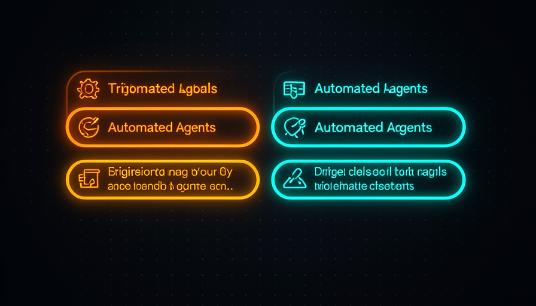
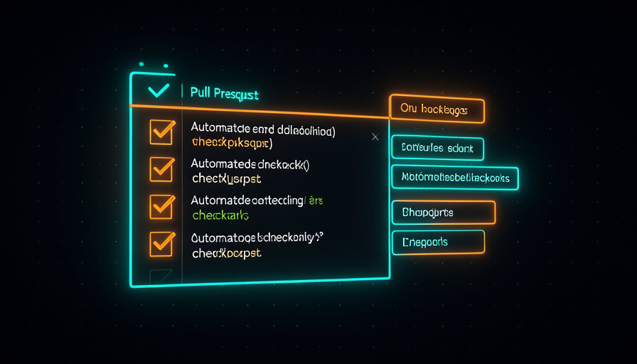

📖 Glossário vivo (leia antes — volte sempre que precisar)
Este módulo entra no mundo do GitHub. Se "CI", "Action" e "PR" são novidade pra você, fixe estes termos primeiro — o resto do módulo só usa eles:
.yml dentro de .github/workflows/ dizendo "quando acontecer X, rode estes passos". É grátis e mora junto do seu repositório.tsc no TypeScript). Pega erros bobos antes de rodar.bug, agent:explore). Além de organizar, ela pode disparar automações.☁️ Agentes em CI
🧠 Imagine assim: você tem um funcionário ótimo, mas ele só trabalha quando está sentado na sua mesa, usando o seu computador. Agora imagine que você dá a ele uma sala própria no escritório da empresa (a nuvem), que liga sozinha toda vez que chega uma encomenda. Ele trabalha lá, e a sua mesa fica livre. É isso que o CI faz com o agente.
Nos módulos anteriores você rodou o agente AFK (longe do teclado) na sua máquina, dentro de uma sandbox. O próximo nível é tirar o agente do seu computador e colocá-lo no CI (integração contínua). CI é simplesmente um robô que mora junto do seu repositório e roda passos automaticamente quando algo acontece — alguém abre um PR, faz um push, ou cola uma etiqueta. No GitHub, esse robô se chama GitHub Action.
A sacada de Matt Pocock é unir as duas coisas: "Run agents using Sand Castle on GitHub Actions — unreasonably effective, parallelize as much as you want, not worried about local resources." Ou seja: rodar agentes na nuvem do GitHub é absurdamente eficaz, porque você pode paralelizar quantos quiser sem se preocupar com os recursos da sua máquina. O CI vira o novo lar do agente: ele acorda só quando um gatilho dispara, faz a tarefa numa máquina virtual descartável, e some. O porquê disso ser tão forte: você não fica refém do seu notebook ligado, e a Action já tem acesso ao código, ao histórico e às credenciais do projeto.
O agente acorda na nuvem só quando um evento dispara — e a sua máquina continua livre.
⚠️ Erro comum de iniciante
Achar que "CI" é uma ferramenta paga e complicada que só empresa grande usa. Não: GitHub Actions vem grátis em qualquer repositório, e um workflow útil cabe em ~20 linhas de YAML. O custo de entrada é quase zero — o difícil é só o primeiro arquivo.
Em 1 frase: rodar o agente em CI é dar a ele uma sala na nuvem que liga sozinha — sua máquina fica livre e você paraleliza à vontade.
Indo mais fundo (opcional): por que "Sand Castle" + Actions e não só Actions?
A GitHub Action é o gatilho e a máquina; o Sand Castle é o que roda o agente com isolamento dentro dela. Sem sandbox, um agente solto poderia, nas palavras do Matt, "delete your home directory or exfiltrate env vars". A Action dá a infraestrutura na nuvem; o sandbox dá a contenção. Os dois juntos = AFK na nuvem com segurança.
🔍 A review action
🧠 Imagine assim: toda vez que alguém entrega um relatório, um revisor experiente lê na hora e cola um post-it: "tá ótimo" ou "olha esse parágrafo aqui". Ele nunca dorme, nunca esquece, e faz isso de graça em todo relatório. A review action é esse revisor — só que pra código.
O exemplo concreto que o Matt dá é uma agent review action: "an agent review action that runs on a PR, does a checkout, type check, runs the review agent (a local prompt), and responds 'looks good'." Quebrando isso em passos, a Action faz quatro coisas, em ordem: (1) dispara quando um PR é aberto; (2) faz o checkout do código; (3) roda o type check pra pegar erros óbvios; e (4) chama o review agent, que lê o diff e comenta.
Repare numa coisa importante: o review agent é "a local prompt" — ou seja, o cérebro do revisor é só um prompt guardado no próprio repositório (uma instrução do tipo "revise este diff procurando bugs, segurança e clareza; responda em português"). Isso é puro harness: a Action é o chassi que leva esse prompt até a nuvem e o roda em cada PR. O porquê de isso valer ouro: você cria um portão de qualidade que roda em todo PR, sem depender de ninguém lembrar de revisar. E o erro comum é pedir que esse agente aprove e faça merge sozinho — no começo ele só comenta; quem decide ainda é você (voltaremos a isso no tópico 6 e no módulo 4.6).

Recuperação rápida: na review action do Matt, o que é o "review agent"?
Em 1 frase: a review action é "checkout → type check → agente lê o diff → comenta no PR" — um revisor que nunca dorme.
🏷️ Labels que disparam
🧠 Imagine assim: numa cozinha de restaurante, o garçom não grita a comanda — ele cola um papelzinho na roda de pedidos. O cozinheiro vê "🟥 sobremesa" e começa. A label é esse papelzinho: você cola uma etiqueta e o agente certo começa a trabalhar.
Aqui está o pulo do gato: você não precisa "rodar um comando" pra ligar o agente. Basta colar uma label. Matt mostra isso olhando as issues do Sand Castle: depois da triagem, ele "adds a label agent:implement and implements on GitHub Actions". A label é o gatilho — a Action escuta o evento "label foi colada" e dispara o agente correspondente. Três labels aparecem no fluxo real dele (issue #795): agent:explore (vai investigar e voltar com dados), agent:in-progress (está trabalhando) e agent:implement (manda implementar de verdade).
Por que labels em vez de comandos? Porque, nas palavras do Matt, "all development is just a queue of tasks: PMs add to the queue, you complete them; multiple nodes pick off the queue." Todo desenvolvimento é uma fila de tarefas. A label é como a tarefa entra na fila e diz que tipo de trabalho ela precisa. No exemplo dele, o bot github-actions ainda posta um comentário de "Triage" com um TL;DR e a dificuldade estimada — tudo disparado pela mudança de label. O erro comum aqui é tentar um único loop gigante que faça tudo; isso "não bate com como times trabalham". Labels separam as fases (explorar → implementar) e mantêm você no controle de cada passo. Isso prepara o módulo 4.4 ("Loops × Filas").
Em 1 frase: colar uma label como agent:explore ou agent:implement é o gatilho — a etiqueta liga o agente certo.
📤 PR como saída
🧠 Imagine assim: um funcionário não publica nada direto no site da empresa. Ele te entrega um rascunho numa pasta pra você olhar e aprovar. O PR é essa pasta: o agente nunca toca no código principal sozinho — ele te entrega uma proposta.
Quando o agente termina uma tarefa na nuvem, a saída dele é um PR — não um commit direto na branch principal. Isso é fundamental por dois motivos. Primeiro, segurança: o código novo fica numa branch separada, então nada entra no produto sem passar por um portão. Segundo, visibilidade: o PR junta num só lugar o diff, os comentários da review action, o resultado do type check e a discussão — vira o "pacote" que você revisa.
É aqui que tudo se encaixa: o agente produz o PR (tópico 3 → label → implementa), a review action comenta nesse mesmo PR (tópico 2), e você decide o merge. Matt descreve o ciclo completo de uma automação: "telemetry bug (Sentry) → cria issue → label explore → o agente retorna dado estruturado (dá pra corrigir já ou precisa de humano?) → implementa → revisa → tag auto-merge ou pinga o humano." Note o final: ou ele marca pra auto-merge, ou ele chama você. A ideia-chave do módulo 4.6 já aparece: "push human-in-the-loop checkpoints further toward the final output" — empurrar o ponto onde você entra cada vez mais pro fim. O erro comum é deixar o agente fazer commit direto na main "pra ir mais rápido"; você perde o portão de review e a observabilidade de uma vez.
🔬 Exemplo resolvido: do bug do Sentry ao PR pronto
Um erro estoura no Sentry (monitoramento). Veja o caminho ponta-a-ponta, todo na nuvem:
- Issue criada automaticamente a partir do erro do Sentry.
- Você cola
agent:explore. O agente investiga e volta com dado estruturado: "causa provável X; dá pra corrigir sozinho? sim/não". - É corrigível → você cola
agent:implement. O agente roda no GitHub Actions e abre um PR com o conserto. - A review action comenta no PR: type check passou, diff parece seguro, "looks good".
- Desfecho: ou ele marca auto-merge (mudança trivial), ou pinga você (precisa de olho humano).
Você só apareceu pra colar duas labels e dar o ok final. O resto rodou na nuvem, e tudo desembocou num PR revisável.

Em 1 frase: a saída do agente é um PR — uma proposta revisável, nunca um commit direto na main.
🔋 Sem travar a máquina local
🧠 Imagine assim: você tem um único forno em casa e quer assar dez bolos. Em casa, é um de cada vez e a cozinha ferve. Se você aluga dez fornos numa cozinha industrial, asse os dez ao mesmo tempo — e sua casa fica fresquinha. A nuvem é a cozinha industrial.
Esse é o grande motivo prático de mover agentes pra CI. A frase do Matt diz tudo: "parallelize as much as you want, not worried about local resources." Cada Action roda numa máquina virtual própria e descartável, fornecida pelo GitHub. Você pode ter cinco PRs abertos ao mesmo tempo, cada um com seu agente trabalhando em paralelo, e o seu notebook nem esquenta — pode até estar desligado. Isso amarra com o módulo 4.2 ("Paralelizar & sandboxes"): lá os agentes paralelos disputavam a sua CPU; aqui eles rodam em máquinas separadas na nuvem, então a paralelização vira praticamente ilimitada. Tem um bônus de economia que conecta com o módulo 1.5: com um harness bem montado (guard rails, type check, prompts claros), você pode usar um modelo mais barato pra fazer o mesmo trabalho — menos tokens "batendo a cabeça". O erro comum é continuar rodando tudo localmente "porque é mais simples" e travar a máquina inteira sempre que dispara dois ou três agentes.
Em 1 frase: na nuvem cada agente ganha sua própria máquina virtual — paralelização quase ilimitada, sua máquina sempre livre.
🛠️ Montar a sua
🧠 Imagine assim: montar a sua primeira Action é como pôr um interruptor na parede: trabalhoso uma vez, mágico pra sempre. Depois é só "apertar o botão" (abrir um PR) e a luz acende sozinha.
Hora de juntar tudo num arquivo real. Crie um arquivo em .github/workflows/agent-review.yml no seu repositório. Ele faz exatamente o que o Matt descreve: dispara on: pull_request, faz o checkout, roda o type check, chama o review agent (com o prompt local) e comenta no PR. Leia cada linha — está tudo comentado:
# Roda um agente de review em todo Pull Request.
name: Agent Review
# GATILHO: toda vez que um PR e aberto ou recebe novos commits.
on:
pull_request:
types: [opened, synchronize, reopened]
# Permissoes minimas: ler o codigo, escrever comentarios no PR.
permissions:
contents: read
pull-requests: write
jobs:
review:
runs-on: ubuntu-latest # maquina virtual descartavel na nuvem
steps:
# 1) CHECKOUT - baixa o codigo do PR pra dentro da VM
- name: Checkout
uses: actions/checkout@v4
with:
fetch-depth: 0 # historico completo, pra gerar o diff
- name: Setup Node
uses: actions/setup-node@v4
with:
node-version: "20"
- name: Install deps
run: npm ci
# 2) TYPE CHECK - pega erros de tipo antes de revisar
- name: Type check
run: npx tsc --noEmit
# 3) REVIEW AGENT - roda o agente com um PROMPT LOCAL
- name: Run review agent
id: review
env:
ANTHROPIC_API_KEY: ${{ secrets.ANTHROPIC_API_KEY }}
run: |
# gera o diff do PR contra a branch base
git diff origin/${{ github.base_ref }}...HEAD > /tmp/pr.diff
# o "cerebro" do revisor e so um prompt versionado no repo
npx @anthropic-ai/claude-code -p \
"$(cat .github/prompts/review.md)
Diff a revisar:
$(cat /tmp/pr.diff)
Responda em portugues. Se estiver ok, diga 'looks good'.
Senao, aponte bugs, riscos de seguranca e melhorias." \
> /tmp/review.md
# 4) COMENTA NO PR - publica o parecer do agente
- name: Comment on PR
uses: actions/github-script@v7
with:
script: |
const fs = require('fs');
const body = fs.readFileSync('/tmp/review.md', 'utf8');
await github.rest.issues.createComment({
owner: context.repo.owner,
repo: context.repo.repo,
issue_number: context.issue.number,
body: "Agent Review\n\n" + body
});
É só isso. Repare que o "inteligente" do revisor mora em .github/prompts/review.md — um prompt local, igual o Matt diz. Trocar o comportamento do revisor é editar um texto, não mexer no encanamento. Esse mesmo esqueleto vira a base de tudo no curso: troque o gatilho (de pull_request pra schedule) e ele vira o cron de security review do módulo 4.5; troque a label que dispara e ele vira o agente de implementação do tópico 3. Comece simples: só o review que comenta. Não dê auto-merge a ele logo de cara — lembre do módulo 4.6, "who reviews the AI that says it's fine?". Primeiro observe o agente trabalhar (a observabilidade que o review te dá); depois, conforme confiar, empurre o checkpoint humano pra mais perto do fim.
No YAML acima, onde mora o "cérebro" (o comportamento) do review agent?
Indo mais fundo (opcional): o que é esse secrets.ANTHROPIC_API_KEY?
Um secret é um valor sensível — aqui, a chave de API que autoriza o agente a chamar o modelo. Você o cadastra em Settings → Secrets and variables → Actions do repositório, e a Action o injeta como variável de ambiente em runtime. Nunca cole chaves direto no YAML: o arquivo fica no histórico do repo, e isso é exatamente o tipo de vazamento que o review existe pra pegar.
Em 1 frase: um YAML de ~40 linhas + um prompt local já te dá um revisor na nuvem; troque o gatilho e ele vira qualquer outra automação.
🧾 Resumo do Módulo
Próximo módulo:
4.4 — Loops × Filas: por que Matt pensa em "fila, não loop", o Ralph loop do Huntley e a analogia do rei medieval.